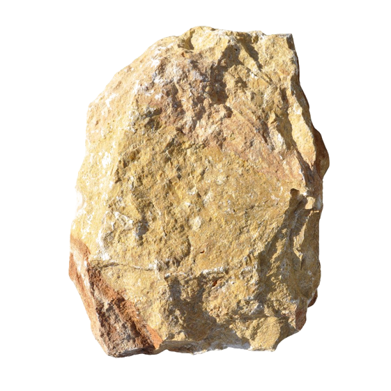

Single flagstone · natural split
Limestone · Syria · irregular flagstone
Dark Yellow Mountain Face
15
The same Syrian flagstone in a deeper ochre, 5 cm thick. For feature walls and facades where a stronger tone is wanted.
Supply
Finish
Natural split (mountain face)
Applications
Feature walls, exterior facades, retaining walls, chimney breasts
Format
Irregular flagstones, packed by the m² on pallets
Piece size
20 – 50 cm across, sorted by size
Thickness
5 cm
Good to know
Colour varies across a pallet; lay out a full elevation before fixing. Can be mixed with Yellow Mountain Face for a two-tone wall. Seal outdoors to keep the ochre from darkening unevenly in the rain.
Technical data
Apparent densityEN 1936
2 600 – 2 620 kg/m³
Water absorptionEN 13755
0.9 – 1.0 %
Compressive strengthEN 1926
90 – 170 MPa
Frost resistanceEN 12371
Suitable for exterior use
Fixing
Cement mortar on a rendered substrate
Values typical of the rock type from published regional data; a product-specific test report is issued with each order.
Cladding